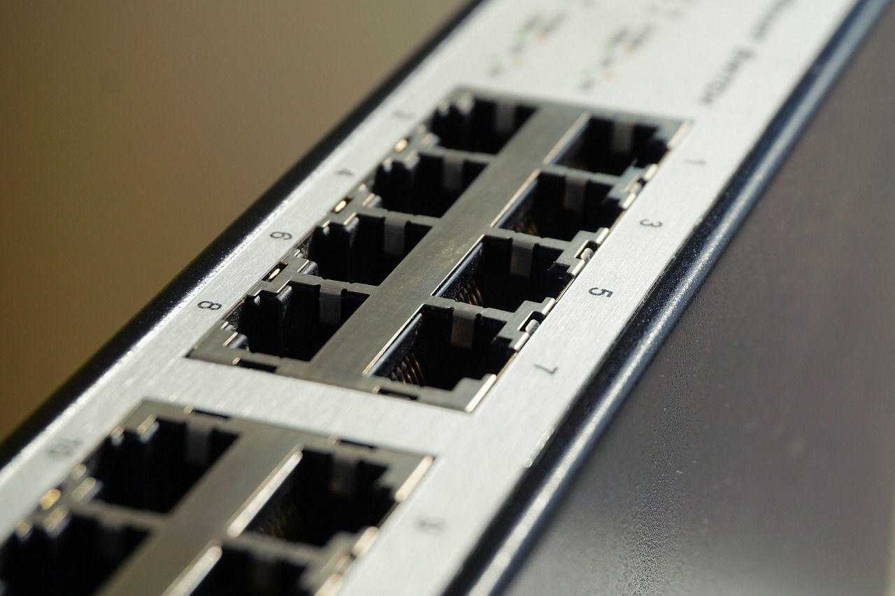

4.1. Concentradores y conmutadores

Procesamiento de datos
Imagen de pixabay.com (autor: Martinelle). Recuperado de https://pixabay.com/es/red-cable-ethernet-computadora-1572617. Licencia CC0 Creative Commons. Gratis para usos comerciales. No es necesario reconocimiento.
Como ya se ha comentado, un hub y un switch tiene una función parecida. Ambos pertenecen al nivel 2 (nivel de enlace) en un la torre de protocolos de comunicación entre dos ordenadores. La función principal de estos dispositivos es la de ofrecer un enlace punto a punto fiable para el intercambio de datos entre dos ordenadores. Pero hay una diferencia fundamental entre un hub y un switch. Se puede decir que un switch es un hub inteligente.
Un hub es un dispositivo dotado de una serie de puertos RJ-45 a los que se le puede conectar un ordenador. Para ello, se necesita un cable de red que conecte el ordenador al hub. Si el número de ordenadores a conectar es elevado, es normal que haya que ampliar el concentrador o interconectar varios de ellos para poder crear la red.
Cuando se tienen 5 ordenadores (entre ellos, los PC A y B) conectados a un hub y el PC A transmite información para enviársela a B, ninguno de los 3 ordenadores restantes pueden transmitir nada ya que el medio de transmisión está ocupado por el envío de A. De hecho, el hub hace la misma función que un cable al que se conectan los 5 ordenadores.
Red con HUB que hace la misma función que una red con un bus
Imagen de elaboración propia
En cambio, si se sustituye en hub por un switch, cuando el PC A quiere enviar algo a B, las tramas que provienen por el puerto donde está conectado A solo se enviarán por el puerto en el que está conectado B, pudiendo el resto de ordenadores no involucrados en este diálogo comunicarse entre sí, aumentando el rendimiento de esta red de área local.
Visualiza el siguiente vídeo ya que explica de una forma muy gráfica la diferencia entre un concentrador y un conmutador.
¿Qué es un "Hub" y un "Switch"?
Vídeo de Franquicias TiendasAPP (2013, mayo). Recuperado de https://youtu.be/eNsJh2VqHTU. Licencia de youtube estándar.
Importante
- Cuando un hub recibe tramas por uno de sus puertos, las reenvía por todos sus puertos excepto por el que las recibió.
- Cuando un switch recibe tramas por uno de sus puertos dirigidas a un ordenador concreto, las reenvía únicamente por el puerto donde está conectado ese ordenador, dejando el resto libre para posibles comunicaciones.
- Un switch es un hub inteligente.